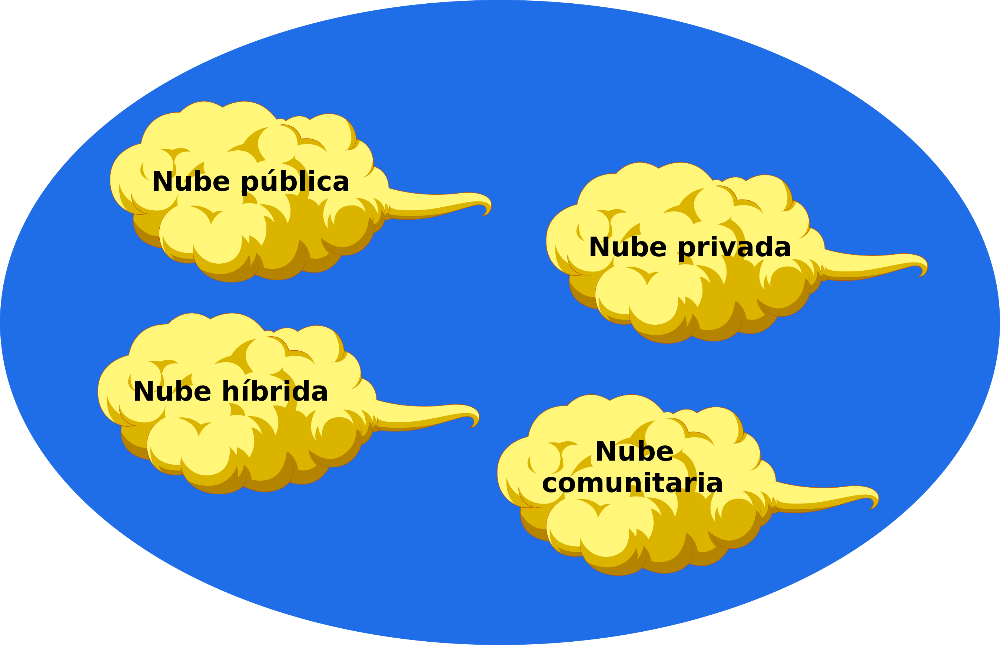

Introducción al ' Computing'
Germán Martínez Maldonado
(
GitHub: @germaaan /
Twitter: @germaaan_)
Oficina de Software Libre de la Universidad de Granada
(Twitter: @OSLUGR /
Facebook: @SoftwareLibreUGR)
Granada Geek
(http://www.meetup.com/es-ES/Granada-Geek/)


¿Qué es la computación en la nube?
La nube es...
Cuando hablamos de nube nos referimos a servicios que están presentes aquí pero que existen en remoto.
- Correo electrónico
- Comunicación / Videoconferencia
- Edición de documentos
- Reproducción de video y audio
La nube es independencia entre dispositivo y ubicación.
Poder manipular, configurar y acceder a aplicaciones sin tener que instalar nada en nuestro sistema local.
Poder hacer nuestras aplicaciones móviles y colaborativas.
¿Por qué es necesario el cloud computing?
Porque no siempre puedes tirar del "ordenador grande, ande o no ande".
Porque a veces no es viable y, además, necesitas respuesta inmediata.
Características principales
- Servicio bajo demanda
- Amplio acceso por red
- Fondo común de recursos
- Rápida elasticidad
- Servicio medido
Otras características
- Escala masiva
- Homogeneidad
- Virtualización
- Software de bajo coste
- Tolerancia a fallos
- Distribución geográfica
- Orientado a servicios
- Seguridad avanzada
Tecnologías del cloud computing
- Virtualización
- Arquitectura orientada a servicios
- Computación grid
- Utility computing
Infraestructura del cloud computing
- Hipervisor
- Software de gestión de la infraestructura
- Software de despliegue de la aplicación
- Red
- Servidor
- Almacenamiento
Arquitecturas del cloud computing

Riesgos
- Gestión de datos e infraestructuras mediante terceros ("La nube es el ordenador de otro").
- Dificultad para cambiar de proveedor
- Fallo de aislamiento
- Interfaz de gestión comprometida
- Borrado de datos de forma insegura o incompleta
Modelos de trabajo en cloud computing:
- Según el modelo de despliegue
- Según el modelo de servicio
Modelos de despliegue
Nube pública
Un proveedor (Google, Amazon, Microsoft...) suministra servicios en la nube cuya infraestructura está disponible para el público en general.
- Económicas / Confiables / Independencia de ubicación / Pago por uso / Alta escabilidad
- Baja seguridad / Menos personalizable
Nube privada
Los servicios en la nube solo están disponible para una única organización, pudiendo ser gestionados internamente o por terceros.
- Mayor seguridad y privacidad / Mayor control sobre los recursos
- Difícil despliegue global / Amplicación cara / Escalabilidad limitada / Mantenimiento
Nube mixta
Combinación de nubes privadas y públicas independientes entre sí, pero que comparten información.
- Escalabilidad / Flexibilidad / Coste eficiente / Seguridad
- Problemas de red / Seguridad extrema
Nube comunitaria
La infraestructura de una misma nube es compartida por varias organizaciones de una comunidad específica.
- Coste efectivo / Seguridad
- Datos accesibles
Modelos de servicio
IaaS
Infrastructure as a Service: un distribuidor provee una infraestructura virtualizada con las caracteristicas solicitadas.
Ejemplos: Microsoft Azure, Amazon EC2, Google Cloud Platform
Características IaaS
- Control total de los recursos informáticos a través del acceso administrativo a las máquinas virtuales
- Adquisión de recursos de forma flexible y eficiente
- Vulnerabilidades de seguridad
PaaS
Platform as a Service: un distribuidor provee el entorno de ejecución para aplicaciones además de herramientas para permitan su despliegue.
Ejemplo: Heroku, OpenShift, Google App Engine, Bluemix
Características PaaS
- Despreocupación administrativa
- Sin necesidad de hacer un gran gasto: servidores, almacenamiento, suministro eléctrico
- Fácil escalabilidad
- Actualizaciones de software
- Pobre portabilidad entre proveedores
Modelos de servicio: SaaS
Software as a Service: las aplicaciones están en la web y son provistas por un distribuidor que es el que se encarga de administrarlas.
Ejemplo: Google Apps, Dropbox
Características SaaS
- El software está disponible a través de Internet
- El software es mantenido por proveedor
- Generalmente se facturación basada en suscripción o en uso
- Disponibles bajo demanda
- Escalado bajo demanda
- Ofrece modelo de datos compartidos
Características SaaS
- Todos los usuarios ejecutan la misma versión del software
- No hay necesidad de paquetes de software complejos en el lado del cliente
- Riesgos basados en el navegador
- Dependencia total de conectividad de red
- Pobre portabilidad entre proveedores
Comparativa

El bucle de la vida
Te hablo de:
- Automatizar las tareas de desarrollo:
- Instalación entornos virtuales desarrollo
- Construcción de aplicaciones
- Realización de tests
- Integración continua
- Virtualización de recursos
- Provisionamiento de servidores
- Gestión de configuraciones
- Despliegue continuo
Te hablo de:
Pero antes de empezar a desarrollar...
Hay un sitio dónde el software nace, crece, se reproduce y muere.

Empezamos:
Antes de desplegar algo, tenemos que tener algo que desplegar. (Obvious is obvious...)
Node.js mola mucho, así que vamos asumir que es lo que estamos usando.
1: Instalación entornos virtuales desarrollo
Como por ejemplo: n.
$ npm install -g n
2: Construcción de aplicaciones
Como por ejemplo: gulp.
$ npm install gulp
2: Construcción de aplicaciones
gulpfile.js:
gulp.task('default', ["start"], function() {});
gulp.task('start', ['test'], function() {
return pm2.connect(function(err) {
if (err) console.log(err);
pm2.start('app.js', function(err, app) {
if (err) console.log(err);
pm2.disconnect();
});
});
});
2: Construcción de aplicaciones
$ gulp
3: Realización de test
Test unitarios:
Test de cobertura:
$ npm install chai mocha istanbul
3: Realización de test
test.js:
describe('Pruebas de acceso', function() {
it("Acceso a páginas", function(done) {
async.eachSeries(config.direcciones, function(url, callback) {
request(app).get(url)
.expect(200)
.expect('Content-Type', "text/html; charset=utf-8")
.end(function(err, res) {
assert.notOk(err);
callback();
});
}, function() {
done();
});
});
});
3: Realización de test
$ gulp test
4: Integración continua
Como por ejemplo: Travis CI.
# .travis.yml
language: node_js
node_js:
- 4.2.0
before_install:
- "HAZ ESTO ANTES DE INSTALAR"
after_success:
- "HAZ ESTO SI PASAS LOS TESTS"
4: Integración continua
¿Y ahora?
Desplegar / Virtualizar
Desplegar en un PaaS
Por ejemplo: Heroku
Permiten añadir como complemento una base de datos PostgreSQL sobre la que podríamos trabajar directamente con nuestra aplicación.
Las máquinas virtuales disponibles en Heroku son conocidas como dynos y se configuran mediante un Procfile.
Desplegar en un PaaS
Configurando el Procfile
Los dynos de Heroku se configuran mediante un archivo llamado Procfile y principalmente podemos diferenciar dos tipos de dynos: web para los procesos que van a recibir tráfico HTTP y worker para los procesos que se van a ejecutar en segundo plano.
web: node app
Desplegar en un PaaS
Crear la aplicación en Heroku
# $ heroku login
$ heroku apps:create --region eu NOMBRE_APP
$ git push heroku master

Desplegar en un PaaS
Escalar la aplicación

Desplegar en un PaaS
Desplegar automáticamente
Virtualizar
Podemos crear contenedores/máquinas virtuales que se puedan desplegar en un IaaS (o en cualquier sitio).
Docker
Contenedores que autocontienen un sistema de archivos completo con todo lo necesario para funcionar:
- Código
- Ejecutables
- Herramientas del sistema
- Bibliotecas del sistema
Docker
Se crean mediante un Dockerfile que se puede subir a DockerHub
FROM ubuntu:15.10
MAINTAINER German Martinez Version: 1.0
RUN apt-get update
RUN apt-get -y install wget net-tools
RUN wget -qO- https://deb.nodesource.com/setup_4.x | bash -
RUN apt-get install -y git nodejs
RUN git clone https://github.com/Gescosolution/Gesco-DatabaseManagement.git /home/Gesco-DatabaseManagement
WORKDIR "/home/Gesco-DatabaseManagement"
RUN npm -g install gulp bower
RUN npm install
RUN bower install --allow-root
EXPOSE 5000
RUN ifconfig eth0
CMD ["gulp", "server"]
Docker
Vagrant
Es una herramienta para la creación y configuración de entornos de desarrollo virtualizados.
Lo primero es descargarse una caja (la caja!).
vagrant box add precise64 http://files.vagrantup.com/precise64.box
Vagrant
Ahora levantamos la máquina virtual y comprobamos que podemos acceder a ella:
vagrant init precise64
vagrant up
vagrant ssh
Vagrant
Vagrant
Se puede configurar mediante un Vagrantfile
# -*- mode: ruby -*-
# vi: set ft=ruby :
Vagrant.configure(2) do |config|
config.vm.box = "ubuntu/wily64"
config.vm.network :private_network, ip: "192.168.2.50"
config.vm.provision "ansible" do |ansible|
ansible.playbook = "playbook.yml"
end
end
Provisionar / desplegar en un IaaS
O como ya había dicho antes, en cualquier sitio
Provisiona con Ansible
Ansible es un motor de orquestación, una herramienta que nos permite aplicar configuraciones en infraestructuras remotas de forma automática.
Provisiona con Ansible
Inventario
perro.ejemplo.com ansible_ssh_host=192.168.1.34
gato.ejemplo.com ansible_port=5555 ansible_host=192.168.1.43
[servidores]
xenial.primero.com
wily.segundo.com
[bbdd]
replica[0:3].cuarto.com
[local]
servidores bbdd
[servidores:vars]
ansible_ssh_user: "usuario"
ansible_ssh_pass: "nolohagas" # NO RECOMENDABLE
Provisiona con Ansible
playbook.yml
---
- hosts: transparente
remote_user: "{{user}}"
tasks:
- name: Descargar script instalación Node
get_url: url=https://deb.nodesource.com/setup_4.x dest=./setup_4.x mode=0550
- name: Ejecutar script de instalación de Node
command: ./setup_4.x
- name: Instalar Node
apt: name=nodejs state=present
- name: Instalar Git
apt: name=git state=present
- name: Instalar Nginx
apt: name=nginx state=present
- name: Descargar repositorio de la aplicación
git: repo=https://github.com/oslugr/ugr-transparente-servidor.git
dest=/home/"{{user}}"/ugr-transparente-servidor
version=master
- name: Cambiando propietario del directorio de la aplicación
file: path=/home/"{{user}}"/ugr-transparente-servidor
owner="{{user}}" group="{{user}}" state=directory recurse=yes
- name: Instalando las dependencias de la aplicación...
npm: path=/home/"{{user}}"/ugr-transparente-servidor
- name: Arrancando el servidor...
command: chdir=ugr-transparente-servidor npm start
Provisiona con Ansible
Ejecutar:
ansible-playbook -become azure.yml
Desplegar con Flightplan
var plan = require('flightplan');
plan.target('transparente', {
host: 'transparente.ugr.es',
username: process.env.USER,
agent: process.env.SSH_AUTH_SOCK
});
plan.remote(function(remote) {
remote.log('Creando copia de seguridad...');
remote.sudo('cp -Rf ugr-transparente-servidor ugr-transparente-servidor.bak', {
user: process.env.USER
});
remote.with('cd ugr-transparente-servidor', function() {
remote.log('Deteniendo el servidor...');
remote.exec('npm stop');
remote.log('Obteniendo cambios...');
remote.exec('git pull');
remote.log('Arrancando el servidor...');
remote.exec('npm start');
});
});